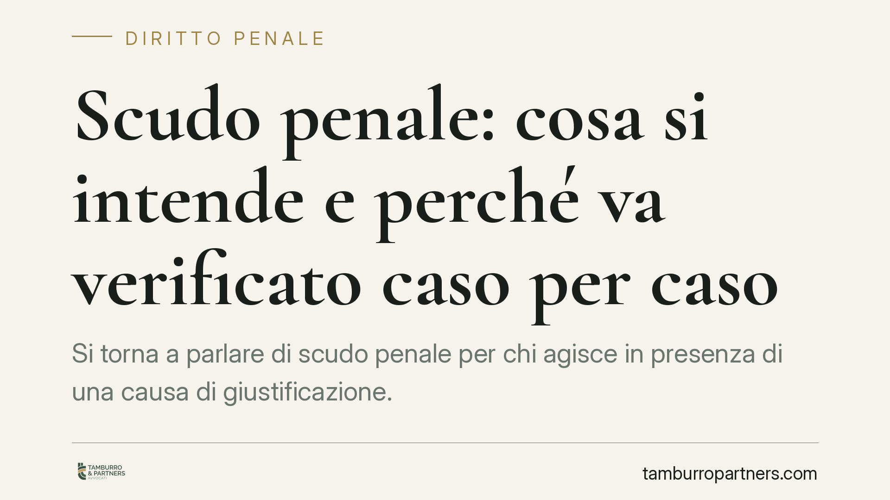

Scudo penale: cosa si intende e perché va verificato caso per caso
Si torna a parlare di "scudo penale" per chi agisce in presenza di una causa di giustificazione. L'espressione, però, non indica un istituto unitario del codice: è una formula giornalistica che copre proposte diverse e profili procedurali spesso fraintesi. Prima di dar per acquisito qualunque "scudo", conviene distinguere il piano sostanziale da quello processuale, senza enfasi e senza scorciatoie.

Una premessa necessaria sulla fonte
L'espressione "scudo penale" ricorre periodicamente nel dibattito pubblico, di solito collegata a categorie professionali (sanitari, forze dell'ordine, amministratori) che operano in contesti a rischio. È bene chiarirlo subito: non esiste nel codice penale un istituto che si chiami "scudo penale". Si tratta di una formula di sintesi, non di una norma.
Ci preme una precisazione di metodo. Alcune ricostruzioni circolanti attribuiscono un contenuto preciso a un presunto art. 12 del D.L. 23/2026 (registro separato delle notizie di reato e archiviazione accelerata per chi invochi una scriminante). Allo stato non siamo in grado di confermare l'esistenza, il numero e il contenuto di tale disposizione. Finché una previsione del genere non risulti effettivamente pubblicata in Gazzetta Ufficiale, va trattata come ipotesi di lavoro, non come diritto vigente. E va ricordato che un decreto-legge, per restare in vigore, deve essere convertito in legge entro sessanta giorni (art. 77 Cost.): fino ad allora la sua stabilità è precaria.
Il piano sostanziale: le cause di giustificazione
Il nucleo giuridico reale dietro la formula è noto e consolidato. Il nostro ordinamento prevede le cause di giustificazione (o scriminanti): situazioni in cui un fatto, pur corrispondente a una figura di reato, non è antigiuridico perché l'ordinamento lo consente o lo impone.
Le principali sono l'adempimento di un dovere e l'esercizio di un diritto (art. 51 c.p.) e la legittima difesa (art. 52 c.p.). Quando ricorre una scriminante, il fatto non è punibile: non perché si "perdoni" l'autore, ma perché manca l'illiceità. Questo è il vero "scudo", e non è una novità: è parte stabile del sistema.
Il punto delicato è un altro. Una cosa è invocare una scriminante; altra cosa è che la scriminante risulti dagli atti in modo tale da escludere la responsabilità. L'affermazione difensiva non equivale all'accertamento. È la differenza tra ciò che si sostiene e ciò che si prova.
Il piano procedurale: cosa cambia davvero
Qui si annida l'equivoco ricorrente. Molte proposte etichettate come "scudo" non introducono nuove cause di non punibilità, ma intervengono sul processo: tempi, iscrizioni, soglie per procedere. Sono interventi legittimi in sé, ma vanno letti per ciò che sono: meccanismi procedurali, non immunità.
Anche nel sistema attuale esistono presidi. L'iscrizione della notizia di reato è disciplinata dall'art. 335 c.p.p. Al termine delle indagini, se gli elementi raccolti non consentono di sostenere l'accusa in giudizio, il pubblico ministero chiede l'archiviazione; la richiesta è sottoposta al controllo del giudice per le indagini preliminari secondo gli artt. 408 e seguenti c.p.p. La presenza di una scriminante emersa dagli atti è, già oggi, un motivo pienamente idoneo all'archiviazione.
Morale: anche un ipotetico "percorso accelerato" non elimina l'accertamento. Al più ne modifica i tempi o le forme. Chi si aspetta un salvacondotto automatico parte da una premessa sbagliata.
Implicazioni pratiche
Per chi opera in contesti a rischio — professionale o di sicurezza — il messaggio operativo è doppio. Da un lato, le scriminanti offrono una tutela reale, ma condizionata a presupposti rigorosi (proporzione, attualità del pericolo, necessità). Dall'altro, nessuna etichetta mediatica sostituisce la ricostruzione puntuale dei fatti.
Il terreno su cui si vince o si perde non è la qualificazione astratta, ma la prova: documenti, testimoni, tracce oggettive che collochino la condotta dentro i confini della scriminante.
Cosa fare in concreto
- Verificate lo stato della norma prima di confidare in qualsiasi "scudo": controllate se la disposizione è davvero in vigore, se è in conversione o se è solo una proposta.
- Documentate subito il contesto dell'azione: tempi, luoghi, percezione del pericolo, ordini ricevuti. La memoria si deteriora, gli atti restano.
- Non rendete dichiarazioni senza prima aver inquadrato la posizione: una ricostruzione imprecisa può pregiudicare l'invocazione della scriminante.
- Richiedete tempestivamente l'acquisizione degli elementi a favore, perché l'archiviazione presuppone che la scriminante emerga dagli atti.
- Rivolgetevi a un difensore nella fase delle indagini, non dopo: è lì che si costruisce la linea.
In sintesi
"Scudo penale" è un'etichetta, non un istituto. Dietro di essa ci sono cause di giustificazione già esistenti e, talvolta, interventi procedurali. Nessuno dei due sostituisce l'accertamento dei fatti. Consigliamo di diffidare delle semplificazioni e di verificare sempre la fonte normativa.
Ogni condominio ha una storia a sé.
Se gestisci un'amministrazione e vuoi un confronto su una specifica questione condominiale, scrivi allo studio. Ti rispondiamo entro un giorno lavorativo.